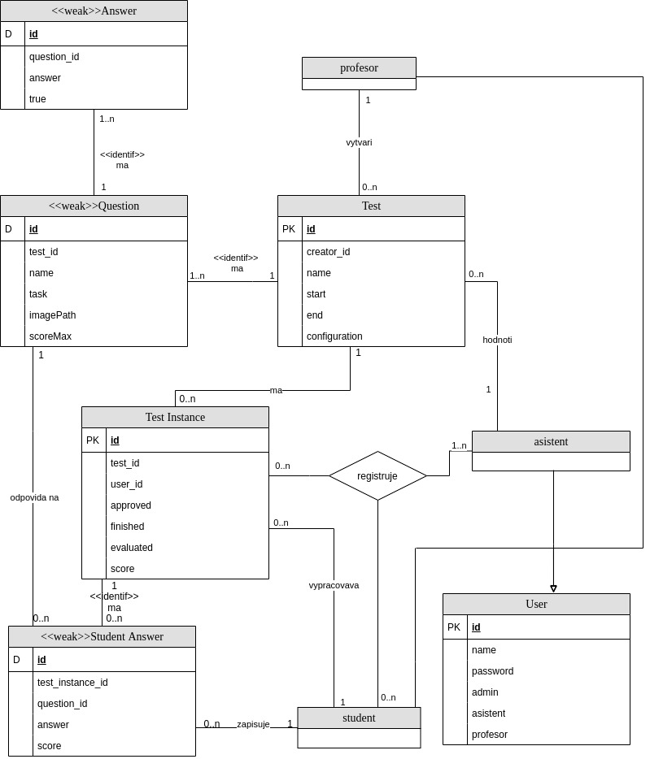

5. Testy: tvorba, plnìní a hodnocení testových zkou¹ek
- Autoøi
- Michal Sova
xsovam00@stud.fit.vutbr.cz -
Tvorba layoutu, stránky Studenta a Asistenta
- Marek Hlávka
xhlavk09@stud.fit.vutbr.cz -
Tvorba layoutu, stránky Profesora a tvorby testù
- URL aplikace
- http://www.stud.fit.vutbr.cz/~xsovam00/IIS
U¾ivatelé systému pro testování
| Login | Heslo | Role |
|---|
| admin@example.com | password | Administrátor |
| profesor@example.com | password | Profesor |
| student@example.com | password | Student |
| asistent@example.com | password | Asistent |
(Diagram pøípadù u¾ití není nutné vkládat, pokud IS implementuje role a pøípady u¾ití definované zadáním.)
Implementace
zadáním projektu bylo vytvoøit IS pro zadávání, vyplòování a konrtole online testù. Jako¾to jazyk implementace
jednotlivých stránek byl vyu¾it jazyk HTML v kombinaci s CSS pro úpravu stylù. Pro lep¹í tvorbu celého projektu byl
zvolen framework Laravel. Celý projekt je rozdìlen do jednotlivých èástí podle rolí, které byly zpracovávány
oddìlenì. Student - tato role má nejménì mo¾ností v celém IS. Mù¾e vyplòovat testy a dívat se na své výsledky.
Asistent - má mo¾nosti asistenta, dále mù¾e potvrzovat registraci studenta na test a poté jeho vyplòený test
vyhodnotit. Profesor - má mo¾nosti asistenta a studenta, dále mù¾e vytváøet testy, tyto testy pak dále upravovat,
pøídávat/mìnit/odebírat otázky a pøidávat/odebírat správné/¹patné odpovìdi na tyto otázky. Jako poslední role je
Admin. Admin má mo¾nosti v¹ech ostatních rolí, dále mù¾e spravovat u¾ivatele v databázi - pøidávat a odebírat úèty,
ketré mají pøístup k IS.
Databáze

Instalace
Softwarove pozadavky
- PHP >= 7.0.0
- OpenSSL PHP Extension
- PDO PHP Extension
- Mbstring PHP Extension
- Tokenizer PHP Extension
- XML PHP Extension
Instalace
Nainstalovat laravel(5.5): https://laravel.com/docs/5.5/installation
Prejiti do adresare projektu: cd project
composer install
npm install
vygenerování klíce: php artisan key:generate
autentizace: php artisan make:auth
prekopírování projektových souboru
vytvorení symlinku k ulozisti(pro obrázky): php artisan storage:link
zkopírování obsahu public/ adresáre do verejne prístupného adresáre(WWW/)
úprava souboru index.php ve verejném adresári (WWW/)(zjisteno zde)
Zmenou:
require __DIR__.'/../bootstrap/autoload.php';
$app = require_once __DIR__.'/../bootstrap/app.php';
Na:
require __DIR__.'/../project/bootstrap/autoload.php';
$app = require_once __DIR__.'/../project/bootstrap/app.php';
kde project je název projektu (v tomto prípade je verejný adresár a adresár projektu na stejné úrovni)
composer install (kvuli prekopirovanym souborum)
Nastavení .env:
APP_ENV=production
APP_DEBUG=false
Konfigurace databáze
Konfigurace databáze
Nastavení .env:
DB_CONNECTION=mysql
DB_HOST= host databáze
DB_PORT= port, na kterém databáze bezí
DB_DATABASE= jméno databáze
DB_USERNAME= prihlasovací jméno
DB_PASSWORD= heslo
vytvorení tabulek(prípadné shození starých) a naplnení vzorovymi daty (a zaroven overeni spojeni s databazi): php artisan migrate:fresh --seed
zaloha: sql skript xsovam00.sql
Známé problémy
Zde popi¹te, které body zadání nejsou implementovány a z jakého dùvodu. Napø. „Z èasových dùvodù nebyla implementována správa u¾ivatelù.” Pomù¾ete tím zrychlit hodnocení, kdy¾ neimplementované funkce nebudeme muset dlouze hledat.